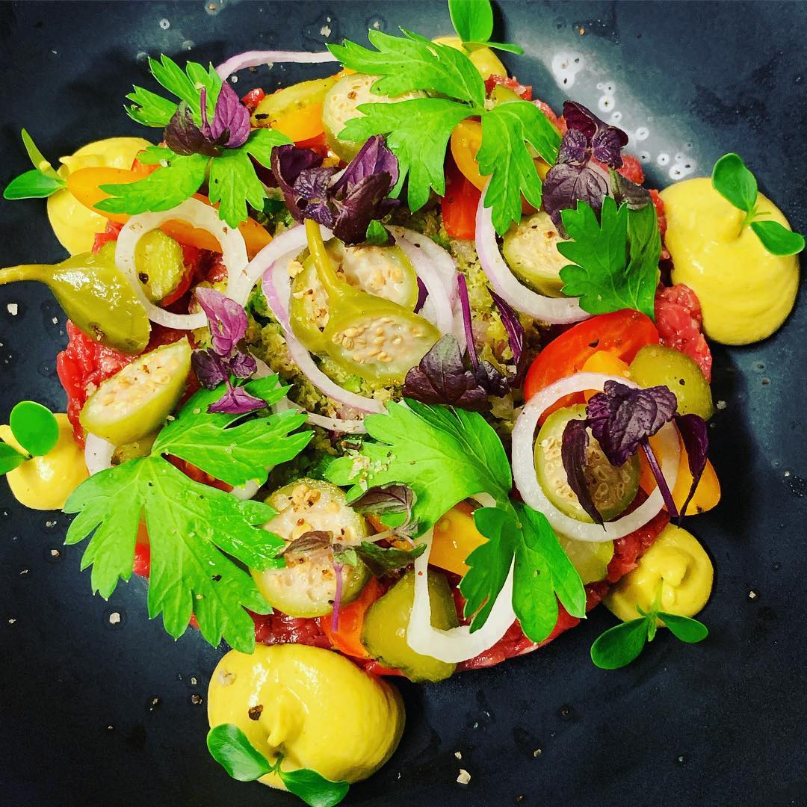
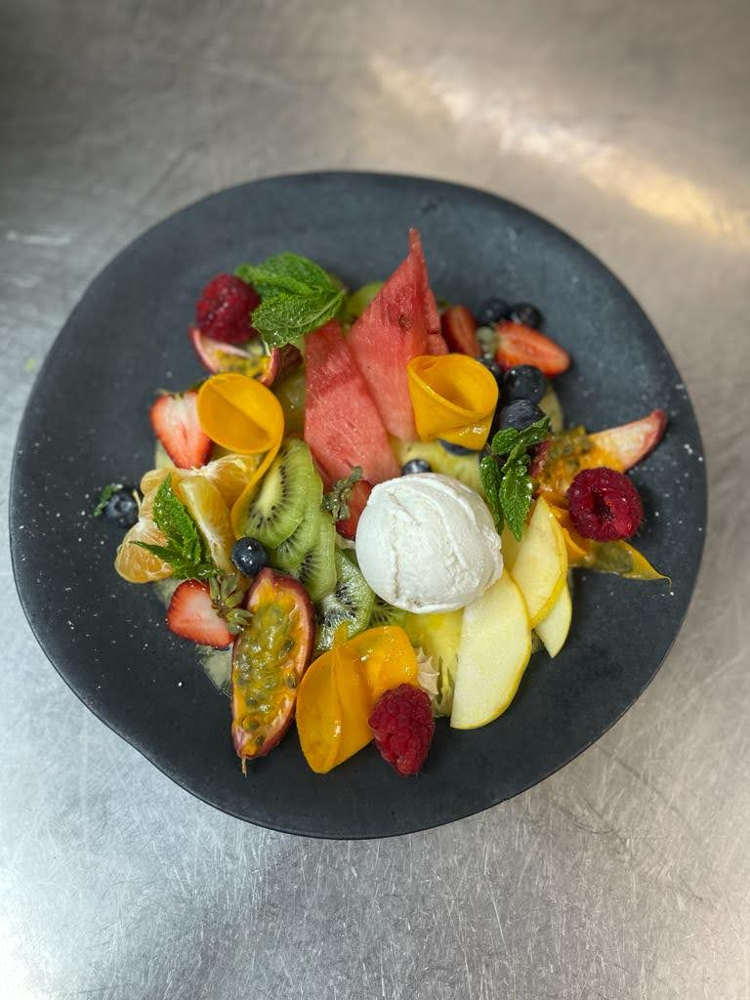
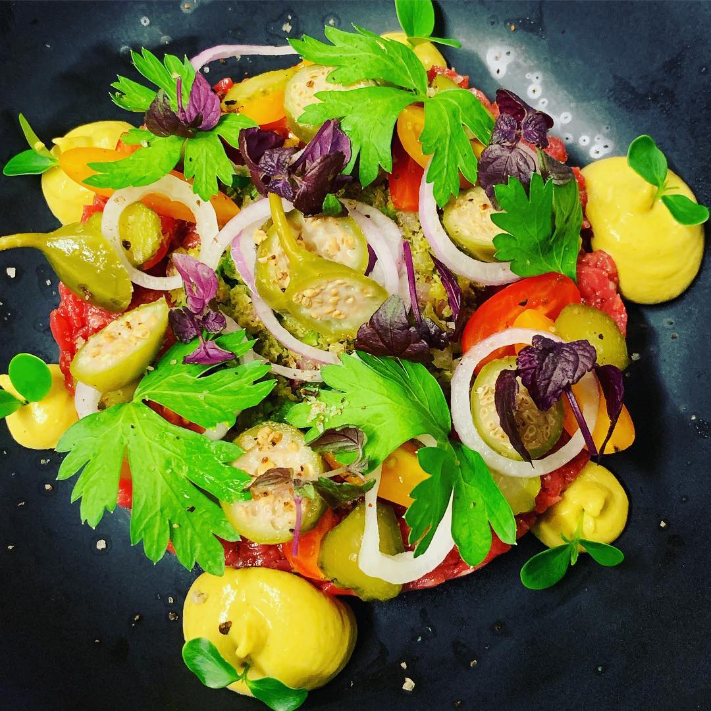
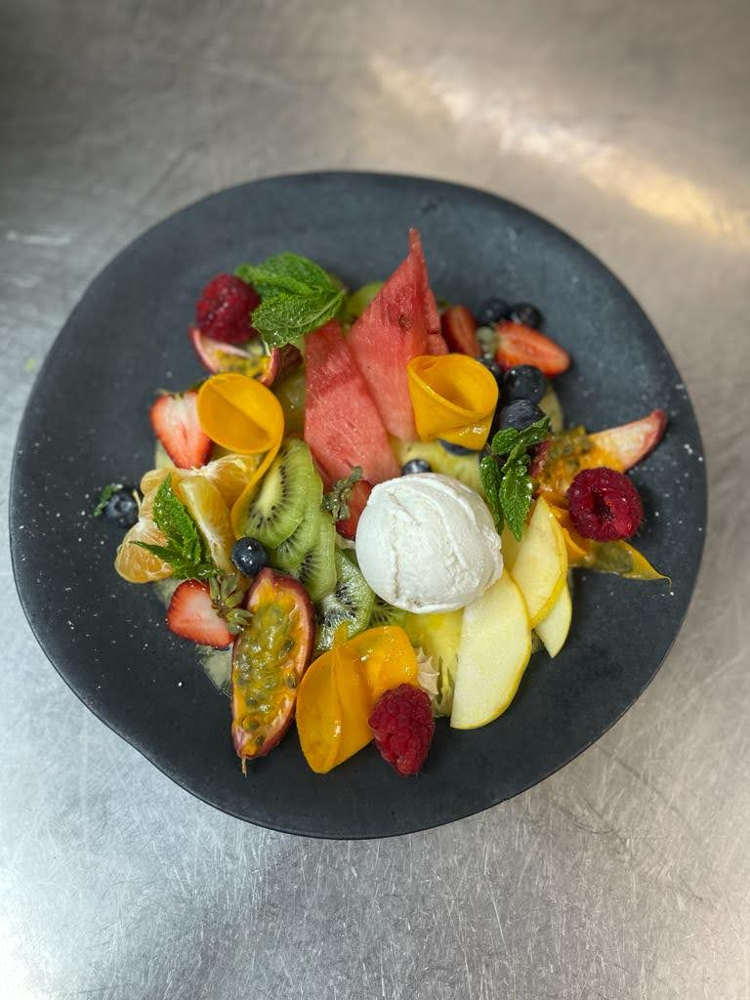

Sur la rive sud du lac Titicaca, Copacabana une halte séduisante entre La Paz et Puno ou Cuzco.
Blottie entre deux collines, elle a toujours été une destination religieuse, où les pèlerins du monde entier
continuent d'affluer lors des jours de fête.
Plus calmes, les promenades au bord de l'eau vous
déconnecteront de la foule. Aussi, ne manquez pas les excursions vers l'Isla del Sol, un bout du monde
empreint de mystères.
Planifier avec nous votre prochaine aventure à Copacabana !
C’est l’un des monuments baroques les mieux conservés du pays. Lorsque Francisco Tito Yupanqui déposa sa Vierge dans le sanctuaire, les miracles commencèrent à se succéder. L’écho en parvint jusqu’en Espagne, et le 7 janvier 1588 le roi d’Espagne, Philippe II, ordonna la construction d’une église. Grâce aux efforts du vice-roi du Haut-Pérou, Don Pedro Fernandez de Castro, la cathédrale put être inaugurée en 1670, mais la basilique actuelle date de 1820. De style Renaissance et baroque, l’édifice a la forme d’une croix et possède cinq chapelles, parmi lesquelles une monumentale chapelle Miserere, située au centre de l’atrium. Les coupoles de style mudéjar, couronnant les cinq chapelles, sont couvertes de faïences (azulejos).
L’élément le plus original de l’ouvrage est la chapelle ouverte, ou capilla de Indios, appuyée contre la nef de l’église. Dans les premières années, le nombre de fidèles était si grand qu’il fallait dire la messe hors de l’église, c’est pourquoi fut décidée sa construction. Elle a une base carrée, couverte d’une coupole circulaire qui s’appuie sur quatre pendentifs. Trois arcs et le mur de l’église forment l’ensemble de la structure qui présente la même hauteur que la nef de l’église. La cathédrale a perdu beaucoup de ses richesses anciennes. Elle conserve cependant l’énorme retable XVIIe de son autel majeur, œuvre de Sebastian Acosta Tupak Inka, de même que de nombreuses sculptures parmi lesquelles, évidemment, la célèbre Vierge taillée en bois de maguey (cactus de la région).

Evidemment, la première chose qui attire lorsque l'on débarque ici, c'est d'explorer les rives du lac Titicaca. Allez voir les embarcations et les pêcheurs passer depuis la terrasse d'un des petits restaurants qui servent de la "trucha" à toute heure.
Le lac Titicaca, auquel la population locale attribue des pouvoirs sacrés, fait l’objet d’une fascination auprès des historiens. De nombreuses expéditions ont été menées sur le site dans l’espoir de trouver les trésors incas égarés par les Espagnols et une mythique ville sous-marine. En 1968, l’explorateur océanographique français Jacques Cousteau a dirigé des recherches dans les profondeurs du lac pendant un mois et demi. À défaut de trouver la ville perdue, l’expédition a permis de mettre en lumière des espèces animales uniques au monde. 10 ans plus tard, la Réserve du lac Titicaca a été fondée dans le but de protéger la faune, la flore et le paysage. Le site enregistre 60 espèces de l’avifaune, 18 types d’amphibiens et 14 variétés de poissons originaires du lac.
Au large des eaux cristallines de Titicaca, l'Isla del Sol est habitée depuis des siècles. C'est l'écrin d'une culture indigène authentique, mais aussi une terre d'évasion avec ses plages blanches et ses randonnées verdoyantes. Accessible en deux heures de bateau depuis Copacabana, l'île dispose d'un hébergement où les voyageurs peuvent passer la nuit.
Pour plus d'informations, cliquez-ici

La randonnée débute au pied d’une église blanche qui se trouve au bout de la calle Destacamento. Les chrétiens montent vers le sommet en suivant douze arrêts marqués chacun par des croix qui évoquent le chemin suivi par le Christ. Vous remarquerez des piles de galets au pied des croix qui représentent les péchés des fidèles.
En les déposant lors de l’ascension, ils permettent aux pèlerins de faire pardonner leurs transgressions. Puis, au milieu du parcours, il y a une plateforme où sont réunis les Yatiris (les sorciers) qui procèdent à la ch’alla d’objets apportés par les croyants.
Des kiosques bourrés de maisons et de voitures miniatures, mais aussi de fleurs, de figurines, de chandelles et de faux billets sont vendus aux fidèles afin que ces derniers puissent implorer la bénédiction du Seigneur et de la Vierge. Ce rite populaire est censé garantir, dans l’avenir, la possession de ces objets, mais bien réels cette fois !

A 500 m de Copacabana, sur le calvario del Niño, se trouve un observatoire astronomique datant d'environ 1764 av. J.-C., à l'époque des Chiripas. Un énorme bloc de pierre haut de 6 m fut creusé verticalement en son milieu, de façon à donner l’impression de deux blocs distincts. En travers de ces deux blocs, à une hauteur de 4,5 m, fut posée une pierre de forme rectangulaire. Juste en face : deux falaises rocheuses. Le jour du solstice d’hiver (21 juin), les premiers rayons du soleil passent à travers l’orifice et viennent s’aligner sur la pierre rectangulaire.
Un endroit tout simplement fou, merveilleux, étrange... qui propose des bungalows à l'architecture démentielle avec vue sur le lac et un jardin avec des hamacs : Las Olas. Une adresse qui fera de votre séjour à Copacabana une étape inoubliable ! Pour 50€ vous aurez une suite avec vue sur le lac, ne vous privez pas !

Ne cherchez pas une autre adresse, vous ne trouverez pas meilleur emplacement et rapport qualité prix. L'Hostal Alvasar propose des chambres très économiques (11€ la chambre double) et un accueil au top. Parfaite adresse quand on voyage à petit prix.

Depuis la gare routière du Cimetière de la Paz, le trajet dure environ trois heures et demie jusqu'au détroit de Tiquina. Là, embarquez dans le ferry pour atteindre l'autre rive où des bus locaux vous emmèneront à Copacabana. Les véhicules s'arrêtent sur la Plaza 2 de Febrero. Depuis Puno au Pérou, le voyage en bus pour Copacabana prend environ 3h30 également, incluant une demi-heure pour passer la frontière.
Copacabana peut se visiter à pied. Pour explorer les environs, vous avez la possibilité de prendre un bus local. Si vous voulez aller sur l'Isla del Sol, les bateaux partent de l'embarquement situé en face de l'avenue principale à 8h30 et à 13h30.

Pour des informations pratiques, vous pouvez également consulter le site officiel de transport publique ici.


 
